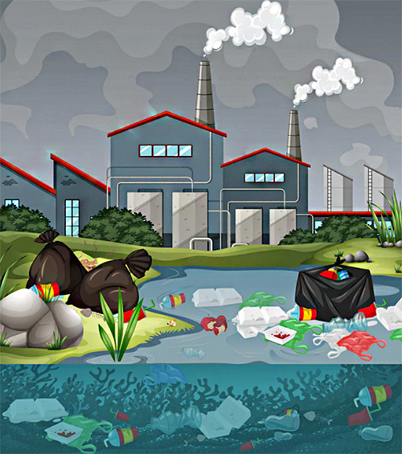

Pollution: A Growing Problem
Water Pollution
Water pollution happen by the contamination of water with soluble sewage and industrial waste. In simple words we can say that water pollution is the mixing of various types of impurities in water bodies that of impurities in water bodies that makes water harmful for living organisms.

Source: orchidsinternationalschool.com
Cause of water pollution include:
- Dumping solid wastes in water bodies.
- Disposing untreated industrial sewage into water bodies.
- Human and Animal waste.
- Agricultural runoff containing pesticides and fertilisers.
Preventions of water pollution include:
- Reduce, Reuse, Recycle waste.
- Properly dispose hazardous waste.
- Control runoff from agriculture and urban areas.
- Support clean energy sources.
- Conserve water through efficient use.